Manual de usuario
Control Maestro TvUAQ
Sistema de registro de asistencia e incidencias
- Luis Ángel Herrera Hernández
- Miguel Ángel Moreno Sánchez
- María de Jesús Peña Torres
- Sadoc Abisai Ubaldo Reyes
Contenido
- 1El sistema en un vistazo
- 2Pantalla de registro (personal operador)
- Entrada · Salida · Mensajes · Incidencias
- 3Entrar a la administración
- 4Operadores
- Alta · Huella · Datos · Horarios · Baja y reingreso
- 5Reportes
- Registro del día · Tabla de asistencias · Reporte individual · Incidencias · PDF
- 6Justificar y editar un turno
- 7Administradores
- 8Respaldos
- 9Cómo se calcula la asistencia
- 10Preguntas frecuentes
CAPÍTULO 1El sistema en un vistazo
El sistema registra con huella digital la entrada y la salida del personal operador y las incidencias de cada turno, y calcula solo las asistencias, faltas, retardos y el tiempo por cumplir.
Funciona en la computadora del Control Maestro, sin internet, y tiene dos partes:
| Parte | Quién la usa | Para qué |
|---|---|---|
| Pantalla de registro | Todo el personal operador | Registrar entrada, salida e incidencias con la huella. Está siempre abierta. |
| Administración | Solo administradores | Dar de alta al personal y sus horarios, consultar reportes, generar PDF, justificar faltas y revisar los respaldos. |
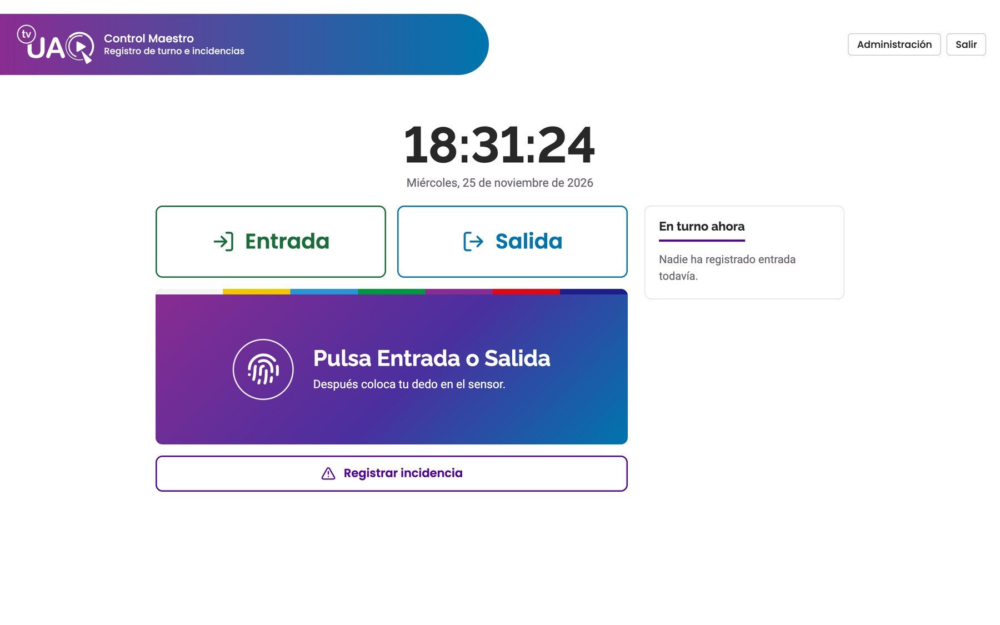
El lector identifica a la persona. La pantalla nunca pregunta el nombre: el registro siempre queda a nombre de quien puso el dedo.
CAPÍTULO 2Pantalla de registro
Para el personal operador. Tres botones: Entrada, Salida y Registrar incidencia.
Registrar tu entrada
- Pulsa el botón Entrada.
- La pantalla dice «Coloca tu dedo para registrar tu entrada» y cuenta 20 segundos. Pon el dedo en el lector.
- Aparece un mensaje grande con la hora exacta y si llegaste a tiempo o tarde. Se cierra solo o con Aceptar.
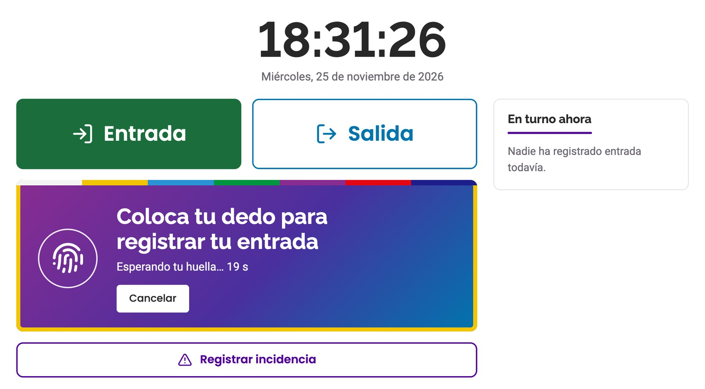
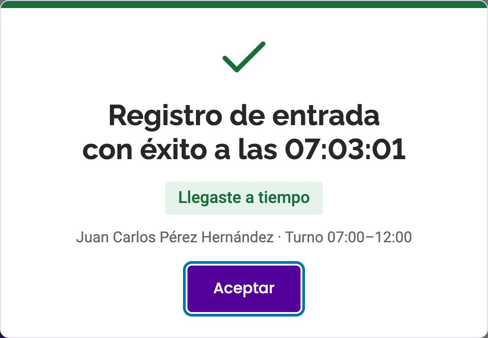
Si te equivocaste de botón, pulsa Cancelar (o la tecla Esc). Si no pones el dedo en 20 segundos, la pantalla vuelve sola al inicio.
Registrar tu salida
- Pulsa Salida y pon el dedo.
- Aparece «Registro de salida con éxito», cuánto tiempo estuviste en turno y, si fue el caso, cuánto te faltó.
Si sales más de 3 minutos antes de la hora de salida, la pantalla pregunta «Aún no termina tu turno. Te faltan … para salir. ¿Estás seguro…?». Elige Registrar salida para confirmar o Cancelar para seguir en turno.
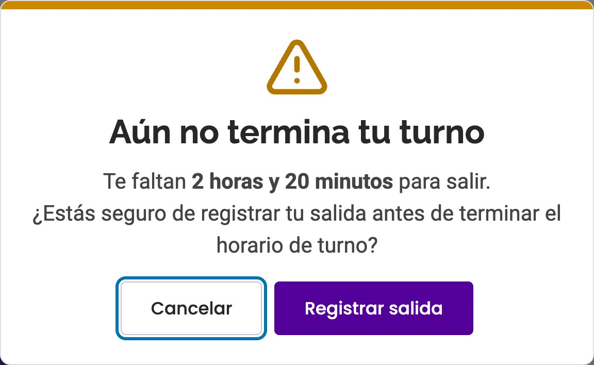
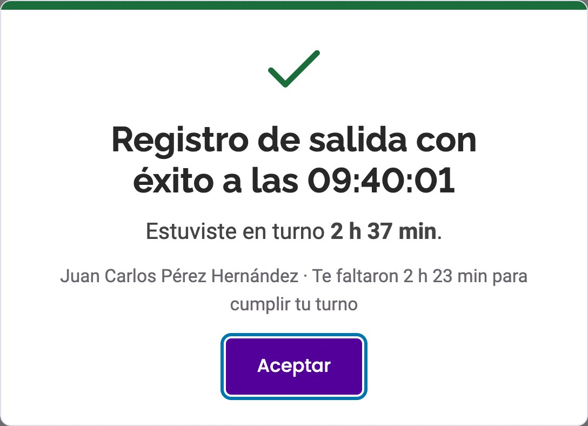
Mensajes que pueden aparecer
| Mensaje | Qué significa | Qué hacer |
|---|---|---|
| Llegaste a tiempo | Entrada dentro de los 15 minutos de tolerancia. | Nada. |
| Llegaste tarde · N min… | Entrada más de 15 minutos después de tu hora. La entrada sí se guarda. | Nada; queda como retardo. |
| Fuera de horario | No tienes un turno programado a esta hora. | Se guarda aparte. Si es un error de horario, avisa al administrador. |
| Ya tienes una entrada registrada | Pulsaste Entrada y ya habías entrado. | Para terminar tu turno pulsa Salida. |
| No tienes una entrada registrada | Pulsaste Salida sin haber registrado tu entrada. | Avisa al administrador. |
| Primero pulsa Entrada o Salida | Pusiste el dedo sin elegir qué registrar. | Pulsa el botón y vuelve a poner el dedo. |
| Huella no reconocida | El lector no identificó la huella. | Limpia el dedo, colócalo plano y centrado e intenta de nuevo (el botón sigue pulsado). |
| Tu registro ya quedó guardado | Pusiste el dedo dos veces seguidas (menos de 15 s). | Nada: solo cuenta una vez. |
| Huella de administrador | Las huellas de administración no registran asistencia (salvo que la persona también sea operadora). | Para administrar, usa el botón Administración. |
| El lector está ocupado | Se está registrando una huella desde la administración. | Espera un momento. |
| El lector de huellas no responde | El lector se desconectó o falló. | Avisa al administrador y anota tu entrada o salida por escrito mientras tanto. |
| Sin conexión con el sistema | El programa se está reiniciando o se detuvo. | Espera; se reconecta solo. Si tarda, avisa al administrador. |
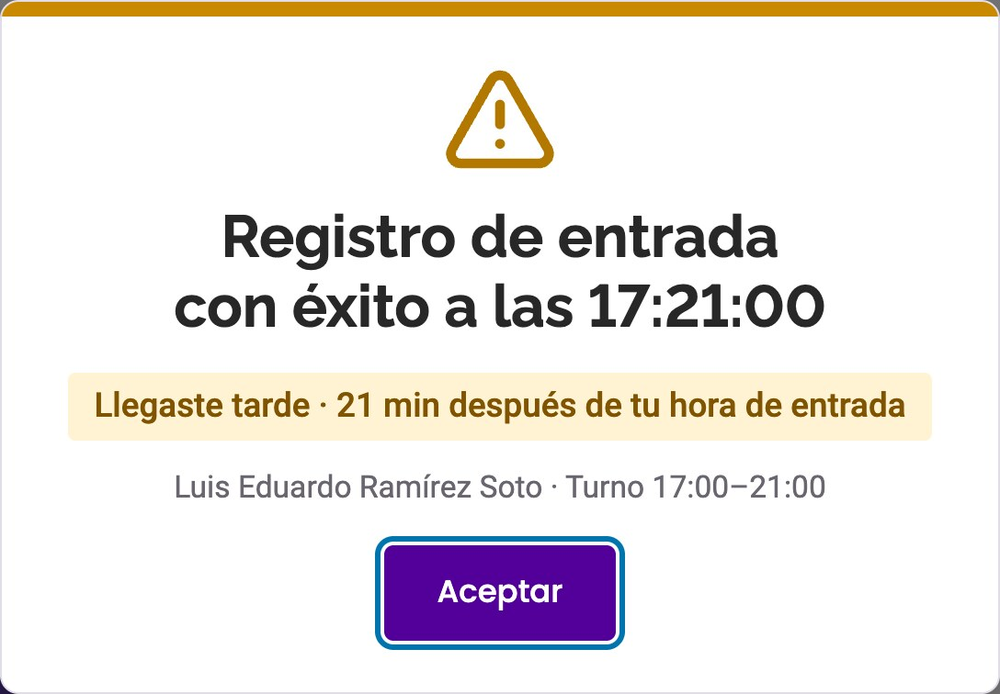
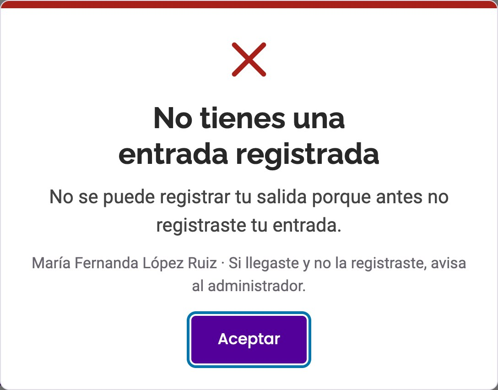
Registrar una incidencia
- Pulsa Registrar incidencia. La fecha y hora de registro se guardan solas.
- Llena la hora de la incidencia, el tipo y la observación (obligatorios). El programa es opcional. Algunos tipos piden también la duración en horas y minutos.
- Cuando el formulario está completo aparece en verde «Listo. Coloca tu huella en el sensor…». Pon el dedo: tu huella firma la incidencia.
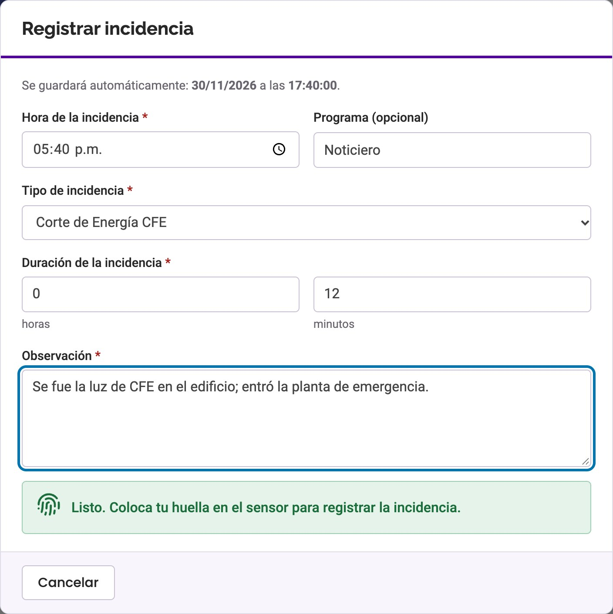
| Tipo de incidencia | ¿Pide duración? |
|---|---|
| Corte de Energía CFE | Sí |
| Falla en el sistema de Energía interno | Sí |
| Falla de equipo | Sí |
| Sustitución de pauta RTC | No |
| Sustitución de pauta INE | No |
| Ajuste de programación | No |
| Falla de programa o videoclip | Sí |
| Otro | Sí |
Con el formulario de incidencia abierto, una huella nunca cuenta como entrada o salida. Si falta un dato, el formulario lo marca y pide volver a poner el dedo.
Otros elementos de la pantalla
En turno ahora (a la derecha) muestra quién registró su entrada y hasta qué hora es su turno. El botón Salir cierra la pantalla sin detener el sistema; para volver a abrirla se usa el acceso directo Control Maestro del Escritorio.
CAPÍTULO 3Entrar a la administración
En la pantalla de registro, botón Administración (arriba a la derecha).
- Con huella: pon el dedo en el lector; la pantalla de acceso lo espera sola.
- Con usuario y contraseña: abre «Ingresar con usuario y contraseña», escribe tus datos y pulsa Entrar.
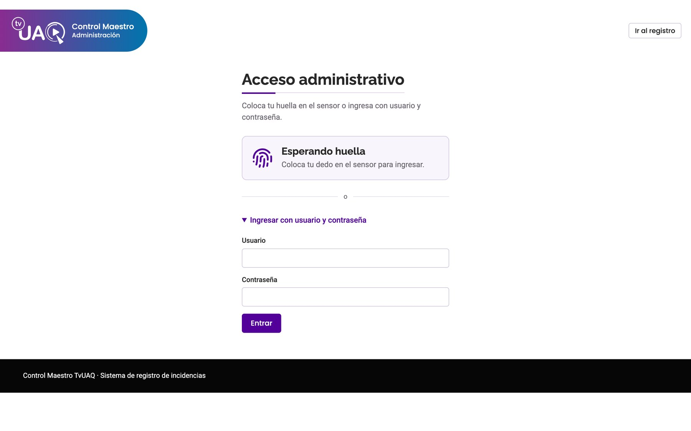
| Intentos fallidos | Tras 5 intentos con contraseña equivocada, el acceso se bloquea 5 minutos. |
| Sesión | Se cierra sola después de 30 minutos sin usarla. Al terminar, pulsa Cerrar sesión. |
| Volver al registro | Botón Ir al registro. |
Arriba están las secciones: Operadores, Registro de asistencia, Tabla de asistencias, Reporte individual, Incidencias, Administradores y Respaldos.
CAPÍTULO 4Operadores
Alta, baja y registro del personal operador.
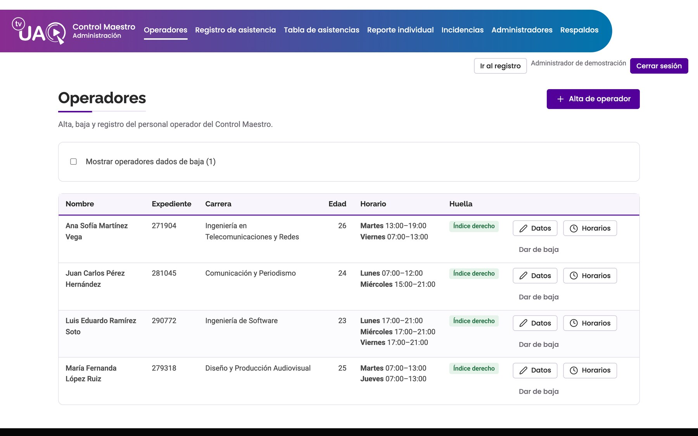
Dar de alta a un operador
- Pulsa Alta de operador.
- Llena nombre(s), apellido paterno, apellido materno (opcional), fecha de nacimiento, expediente y carrera. El expediente no se puede repetir.
- En Horario que estará en turno agrega cada turno con Agregar turno: día, hora de entrada y hora de salida. No se permiten turnos empalmados el mismo día.
- Pulsa Registrar operador. Enseguida se abre el registro de su huella.
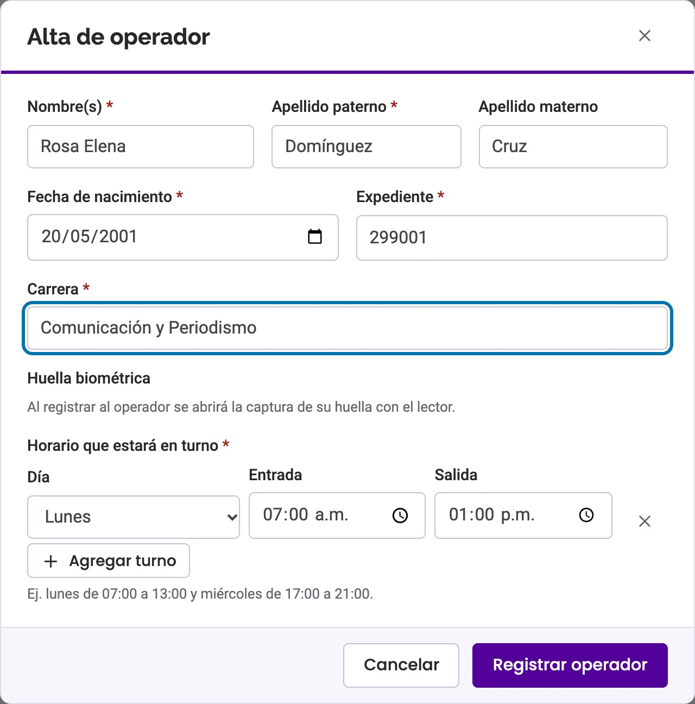
Registrar la huella
- Elige el dedo (el sistema sugiere uno libre). Se recomiendan dos dedos por persona, por ejemplo índice derecho e izquierdo; el máximo es 2.
- La primera vez, la persona lee el aviso de privacidad y se marca «La persona leyó y acepta el aviso de privacidad».
- Pulsa Iniciar captura y pide a la persona que ponga el dedo varias veces (unas 4), quitándolo entre cada una. La pantalla muestra «Captura 2 de 4…».
- Al terminar aparece «Huella registrada».
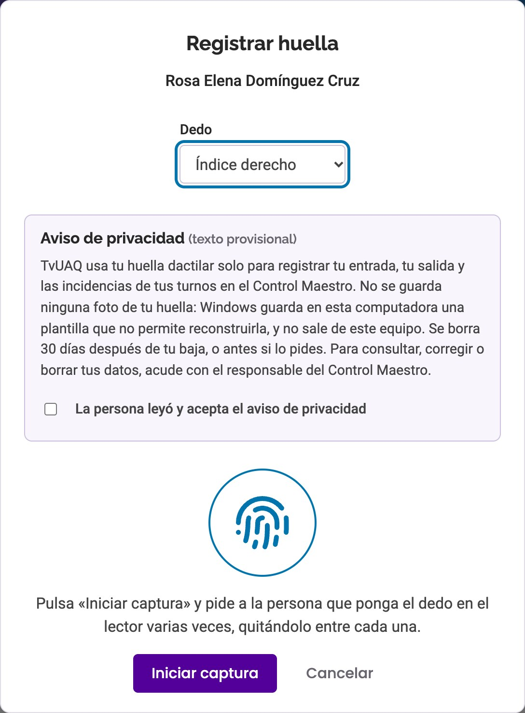
Nadie puede marcar entrada o salida (la pantalla de registro dice «El lector está ocupado»). Si hace falta, pulsa Cancelar. Si dice «huella duplicada», ese dedo ya está registrado: usa otro.
Editar datos, huellas y horarios
En la fila de cada operador:
| Datos | Corrige sus datos personales. Desde aquí también Registrar huella (agregar o reemplazar un dedo) y Borrar huellas. |
| Horarios | Cambia sus turnos. El nuevo horario aplica desde hoy: las asistencias y faltas anteriores se siguen calculando con el horario que tenía. |
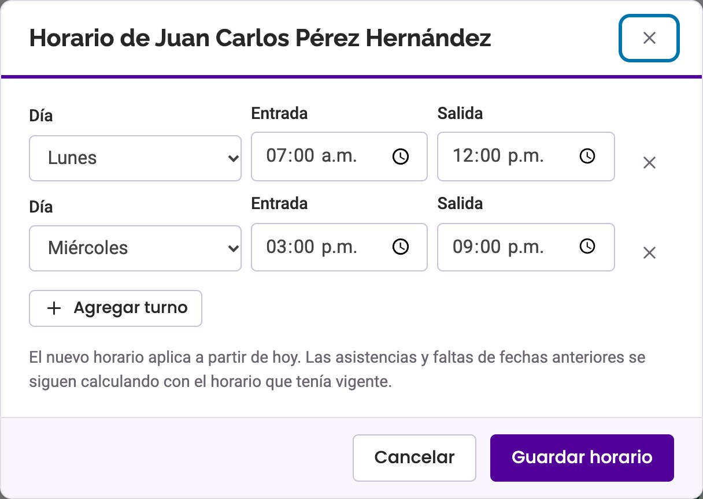
Dar de baja y reingresar
- Pulsa Dar de baja, elige el motivo (renuncia, despido, fin de contrato u otro) y confirma.
- La baja es inmediata: ya no puede registrar nada y no se le cuentan más faltas.
- Sus datos se conservan 30 días. En ese plazo, marca «Mostrar operadores dados de baja» y pulsa Reingresar si fue un error.
A los 30 días se borran todos sus datos, su huella y su historial, sin posibilidad de recuperarlos. Si necesitas su reporte, genera el PDF antes.
CAPÍTULO 5Reportes
Todos los reportes se calculan al momento y se pueden guardar o imprimir en PDF con el botón Generar PDF.
Periodos rápidos
En los reportes por periodo, el campo Periodo ofrece: Hoy, Últimos 7 días, Últimos 30 días, Este mes, Mes anterior, Primera quincena (1–15), Segunda quincena (16–fin) y Este año. También puedes escribir la fecha inicial y final (queda como «Personalizado»).
Registro de asistencia (un día)
Todo el personal con turno ese día: entrada, salida y estado. Usa Día anterior, Hoy y Día siguiente para moverte. Arriba se resumen los turnos del día, presentes, retardos, faltas, pendientes y justificadas.
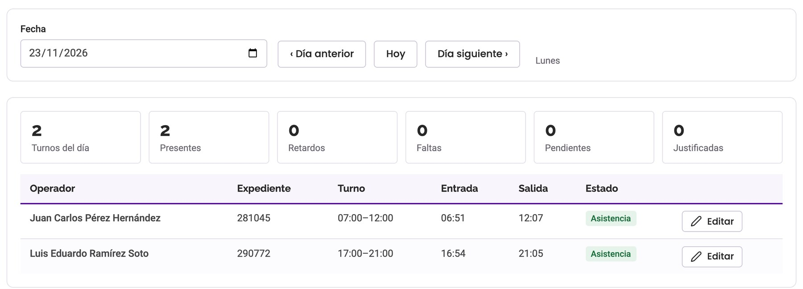
Tabla de asistencias
Una fila por operador con: nombre, edad, expediente, carrera, asistencias, faltas, retardos, turnos incompletos, sin salida, fuera de horario y justificadas. El nombre lleva a su reporte individual.
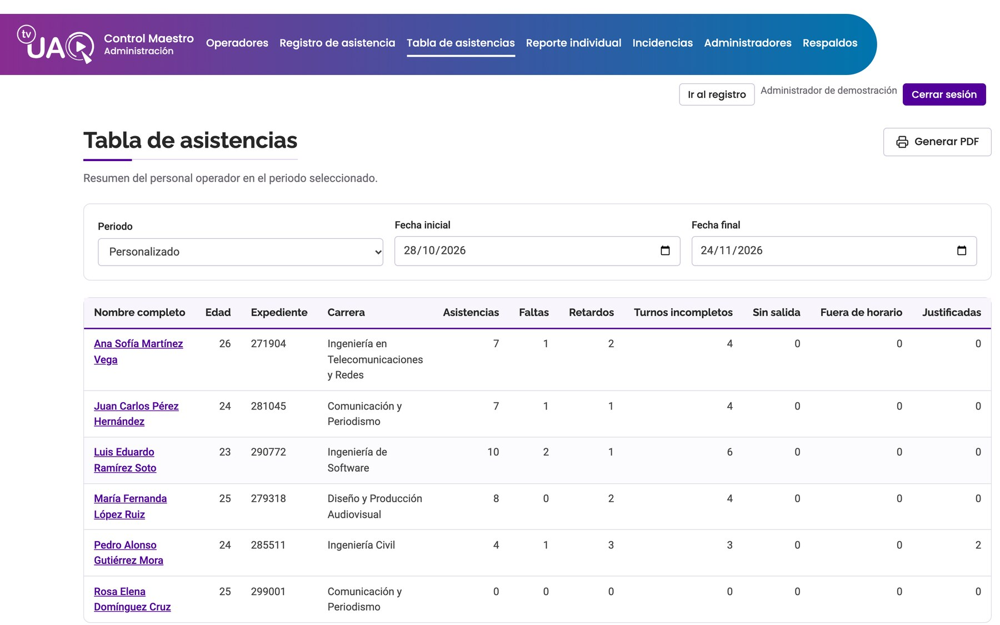
Reporte individual
Elige al operador y el periodo. Muestra el resumen (asistencias, faltas, retardos, turnos incompletos, tiempo total por cumplir y justificadas) y las listas de asistencias, faltas, retardos (con minutos de retraso), turnos incompletos (con horas en turno y lo que le faltó), justificadas, el detalle por turno y los registros fuera de horario.
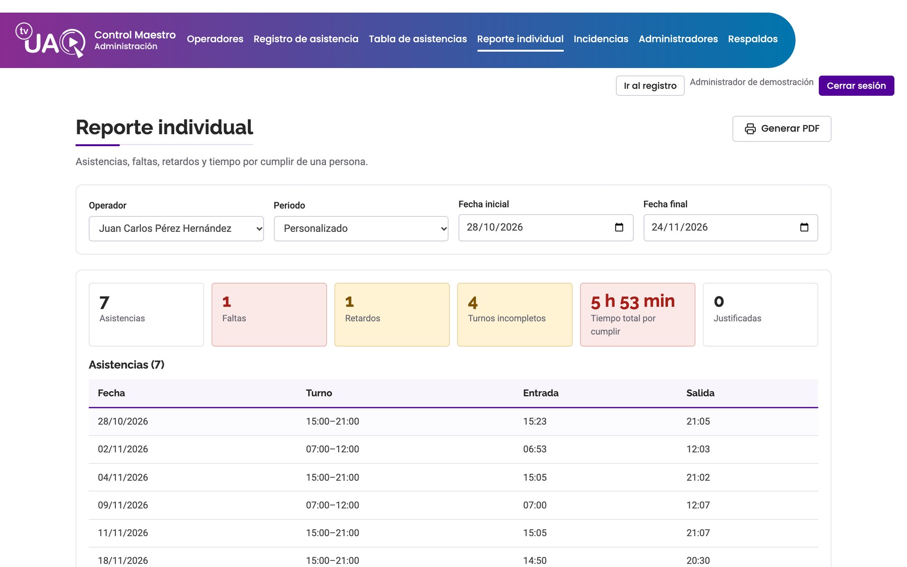
Incidencias
Consulta por rango de fechas o por fecha específica, y filtra por tipo de incidencia y por operador que registró. Muestra cuándo se registró, fecha y hora de la incidencia, programa, duración, tipo, observación y operador.
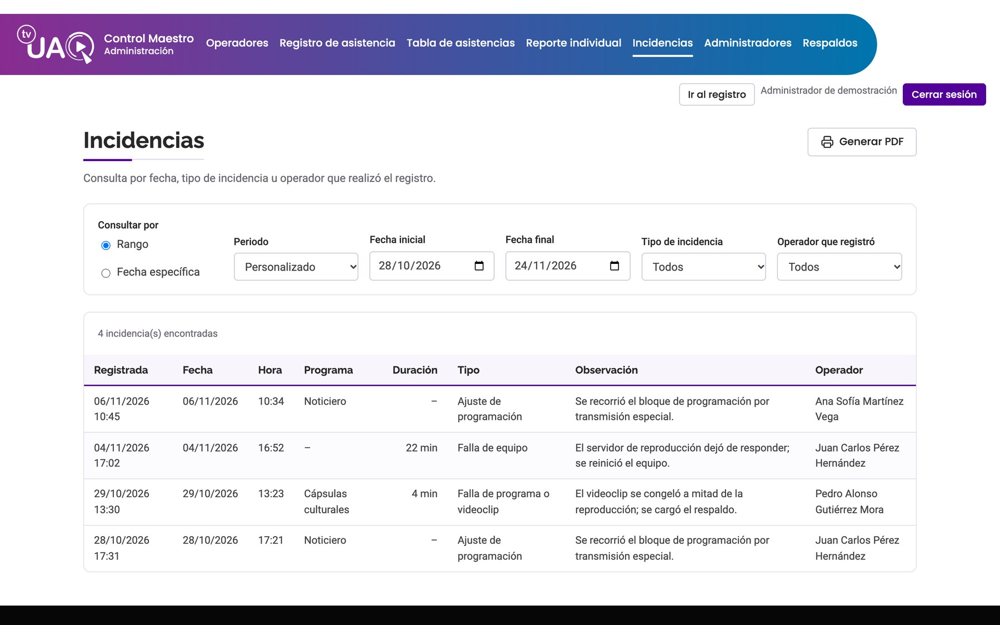
Generar PDF
- En cualquier reporte, pulsa Generar PDF: se abre dentro de la pantalla.
- Usa el botón de imprimir del visor o Descargar para guardarlo con su nombre.
- El PDF sale en hoja membretada, con el periodo, quién lo generó y espacio para firmas de Elaboró y Vo. Bo.
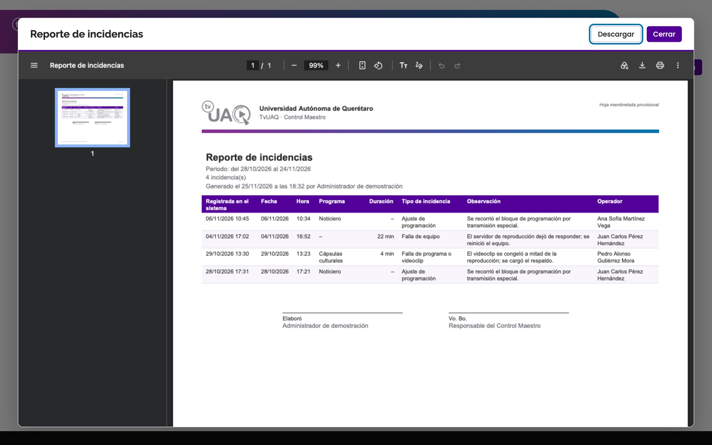
CAPÍTULO 6Justificar y editar un turno
Desde el Registro de asistencia o el Reporte individual, cada turno tiene sus botones.
Justificar
Aparece solo si el turno tiene falta, retardo o tiempo faltante. Escribe el motivo (obligatorio) y pulsa Guardar justificación. Un turno justificado deja de contar como falta, retardo o tiempo faltante. Se puede deshacer con Quitar justificación.
Editar
Cambia a mano el estatus del turno (Asistencia, Retardo o Falta), con un motivo opcional. El turno queda marcado como «Editado». Para deshacerlo, elige Volver al estatus calculado.
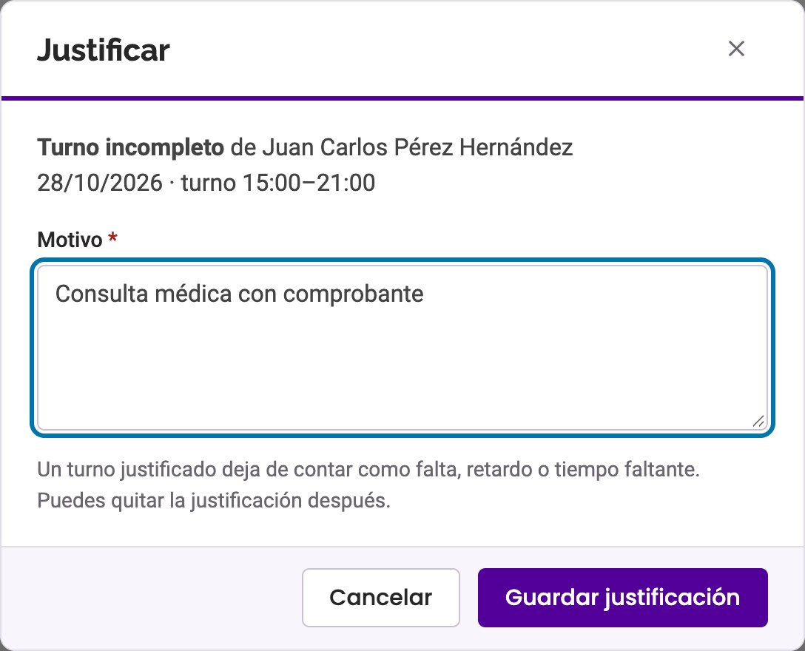
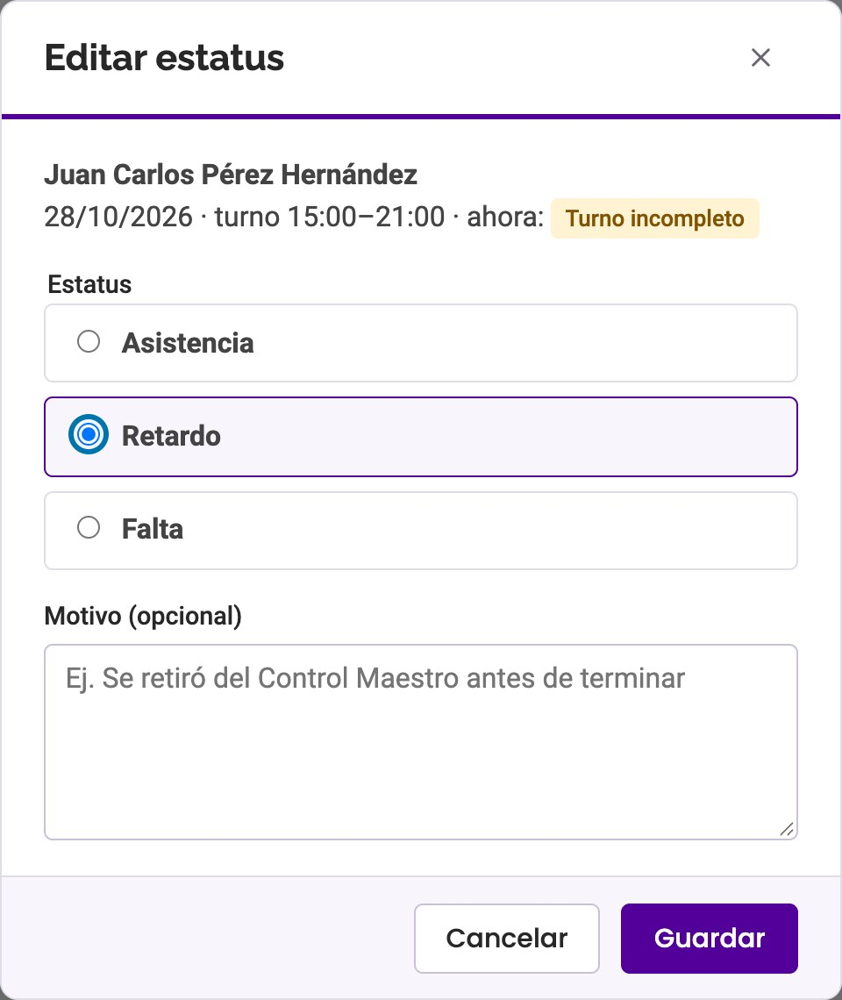
Un administrador que también es operador no puede justificarse, editarse, cambiar su horario ni darse de baja a sí mismo: lo hace otro administrador. Todo cambio queda en la bitácora.
CAPÍTULO 7Administradores
Solo los administradores entran a la administración.
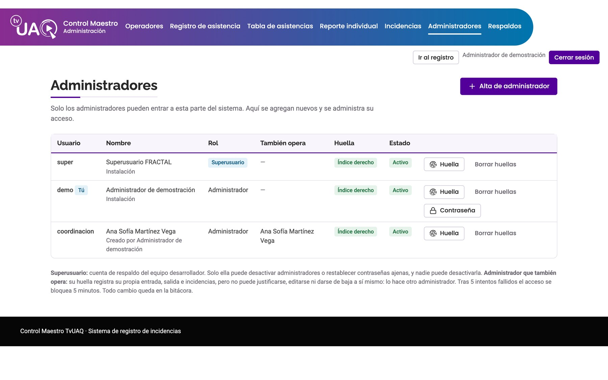
Dar de alta a un administrador
- Pulsa Alta de administrador: usuario, nombre completo y contraseña (dos veces). La contraseña debe tener al menos 8 caracteres y no ser fácil de adivinar.
- Si la persona también cubre turnos, elígela en También es operador: su huella registrará su propia entrada, salida e incidencias.
- Pulsa Crear administrador y después registra su huella con el botón Huella.
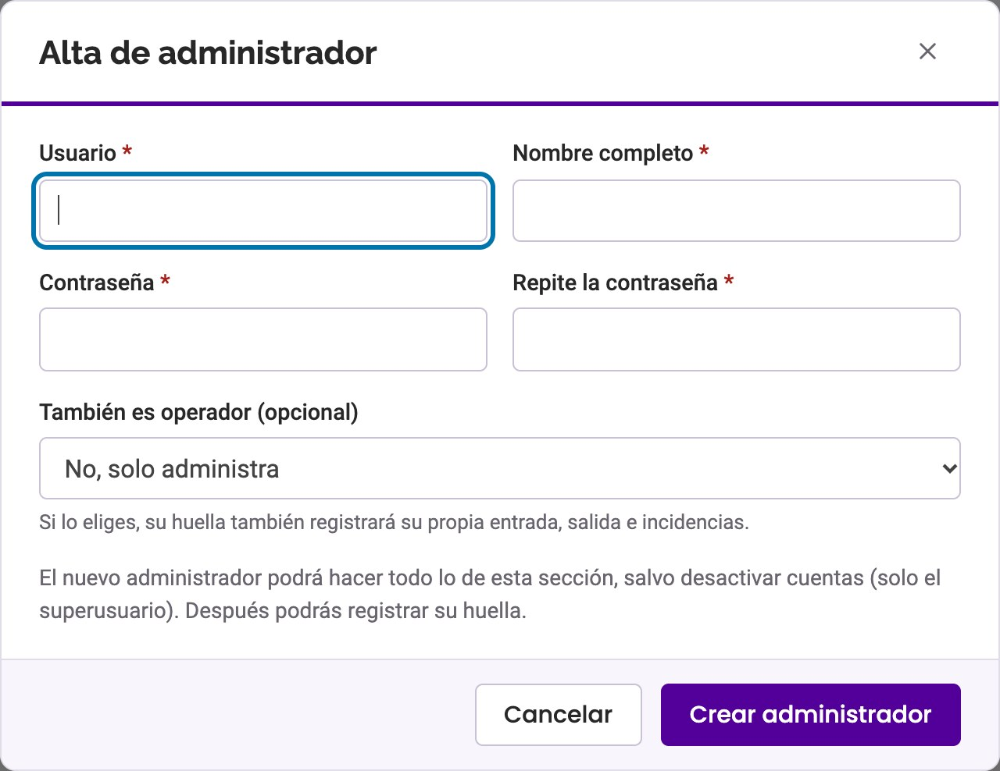
| Rol | Puede |
|---|---|
| Operador | Registrar entrada, salida e incidencias. No entra a la administración. |
| Administrador | Todo lo de la administración: operadores, horarios, reportes, justificar, administradores y respaldos. Cambiar su propia contraseña. |
| Superusuario | Cuenta de respaldo del equipo desarrollador. Además, desactivar administradores y restablecer contraseñas ajenas. Nadie puede desactivarla. |
CAPÍTULO 8Respaldos
Copias de la base de datos, verificadas una por una, en la PC y en una memoria USB.
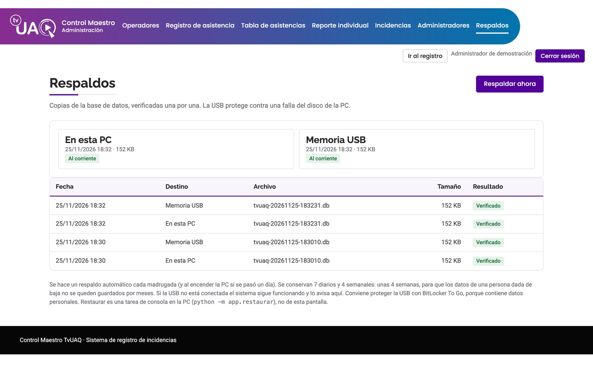
- Se hace un respaldo automático cada madrugada, y al encender la PC si se pasó un día.
- Se conservan 7 diarios y 4 semanales (unas 4 semanas).
- Respaldar ahora hace uno en el momento. Debe decir «Verificado».
- Si la USB no está conectada, el sistema sigue funcionando y lo avisa en esta pantalla.
Contiene datos personales: guárdala en un lugar seguro y, de preferencia, protégela con BitLocker To Go. Restaurar un respaldo es una tarea técnica (ver el manual técnico).
CAPÍTULO 9Cómo se calcula la asistencia
Las reglas las aplica el sistema igual para todos. Las horas se comparan al minuto.
| Término | Significado |
|---|---|
| Asistencia | Registró su entrada y su salida, sin importar la hora. |
| Retardo | Registró su entrada más de 15 minutos después de la hora programada. |
| Falta | No registró entrada ni salida en un turno programado y el turno ya terminó (antes de eso aparece como «Pendiente»). |
| Turno incompleto | Estuvo menos tiempo del programado: por llegar tarde, salir antes o ambos. |
| Horas en turno | Desde la hora de entrada hasta la de salida, sin pasar de la hora programada de salida. Llegar antes sí cuenta. |
| Tiempo faltante | Horas programadas menos horas en turno. Una falta suma su turno completo. |
| Sin salida | Registró su entrada pero no su salida. No cuenta como asistencia hasta que se aclare. |
| Fuera de horario | Registros en días u horas sin turno programado. Se listan aparte y no cuentan como asistencia. |
| Justificada | Turno que un administrador justificó: ya no suma como falta, retardo ni tiempo faltante. |
Tolerancia de retardo: 15 minutos. Salida sin aviso: hasta 3 minutos antes. Entrada permitida desde 60 minutos antes del turno. Estos valores se ajustan en la configuración del sistema sin cambiar el programa, siempre de acuerdo con el responsable del Control Maestro.
Ejemplos de los requerimientos
Una persona con turno el lunes de 07:00 a 12:00 (5 h) y el miércoles de 15:00 a 21:00 (6 h):
| Caso | Registro | Resultado |
|---|---|---|
| Caso 1 · lunes | Entrada 06:50, salida 11:30 | Estuvo 4 h 40 min; le faltaron 20 min. Turno incompleto. |
| Caso 2 · miércoles | Entrada 15:05, salida 21:00 | No es retardo (dentro de los 15 min), pero le faltaron 5 min. Turno incompleto. |
CAPÍTULO 10Preguntas frecuentes
Se fue la luz. ¿Se perdió algo?
No. Lo registrado se guarda al momento. Al encender la PC e iniciar sesión, el sistema se abre solo.
No hay internet. ¿Funciona?
Sí. Todo funciona en la propia PC; no necesita internet.
Olvidé registrar mi entrada.
Avisa al administrador. Puede revisar el turno y, si corresponde, justificarlo o editar su estatus.
Mi huella no se reconoce nunca.
Usa el mismo dedo con el que te registraron, limpio y bien centrado. Si sigue, el administrador puede borrar tus huellas y registrarlas de nuevo.
Cerré la pantalla por error.
Abre el acceso directo Control Maestro del Escritorio. El sistema siguió funcionando.
Olvidé mi contraseña de administrador.
El superusuario puede restablecerla desde Administradores, o se restablece en la PC con el archivo de crear administrador (ver el manual técnico).
¿Se puede cambiar la tolerancia de 15 minutos?
Sí, en la configuración del sistema, sin cambiar el programa. Lo hace el equipo técnico.
¿Qué pasa con mi huella si dejo el Control Maestro?
Se borra junto con todos tus datos 30 días después de tu baja. El sistema no guarda imágenes de la huella.